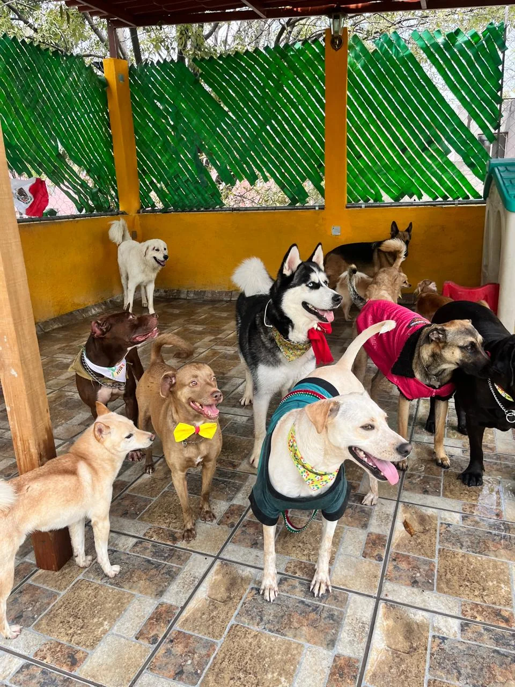
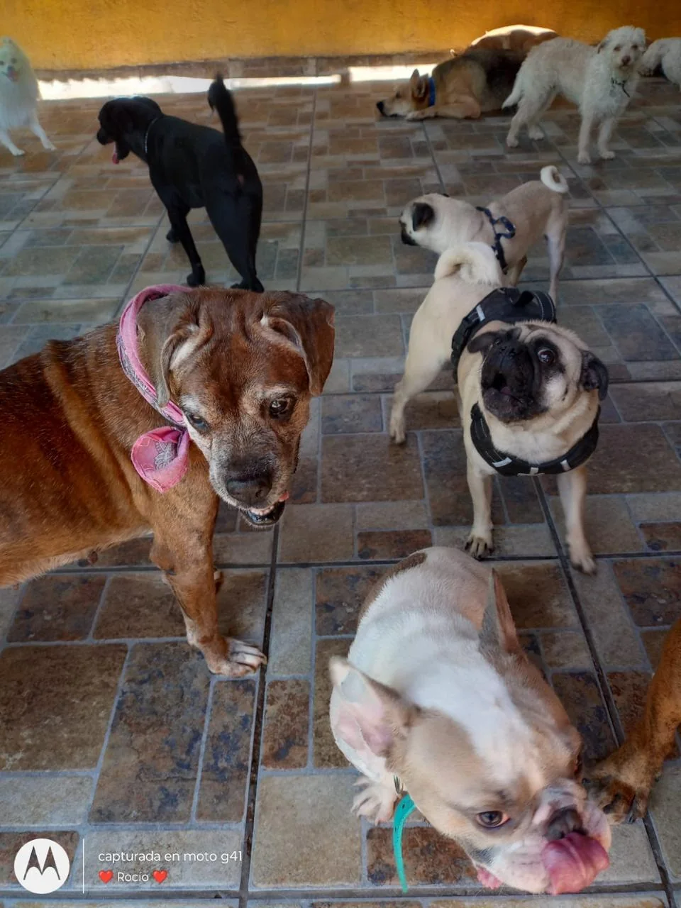
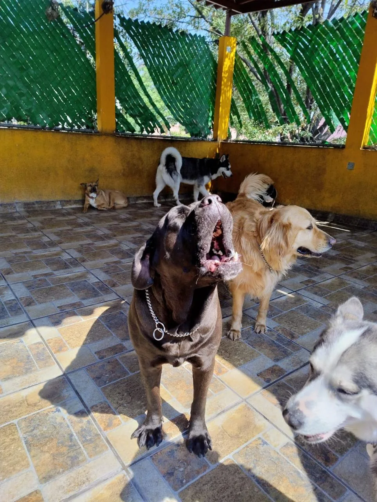
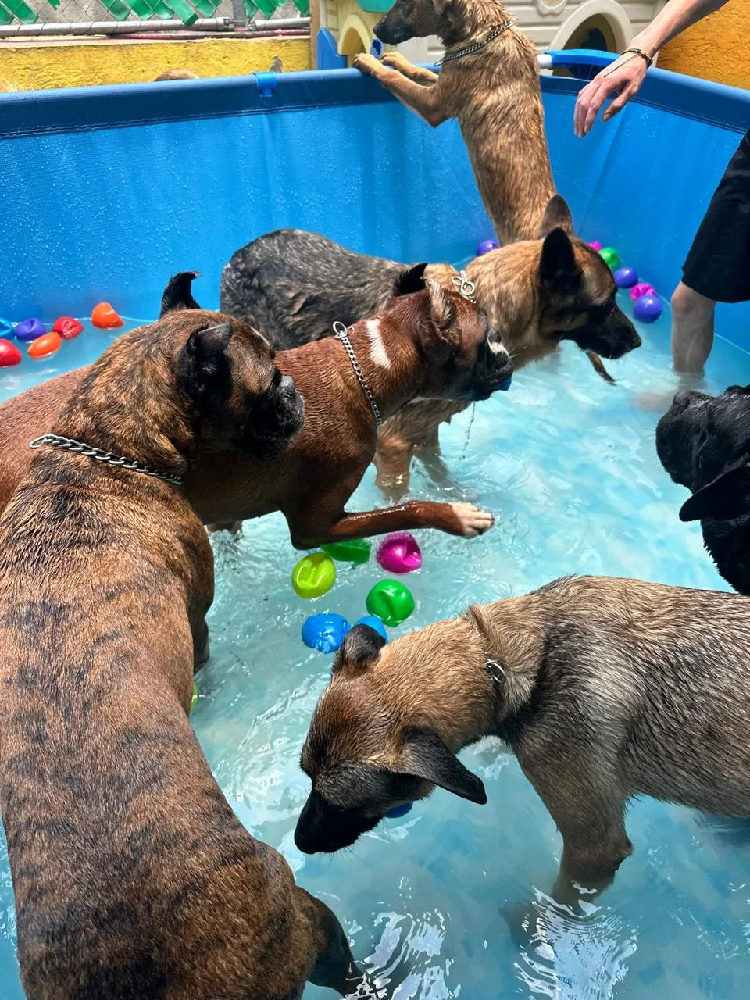
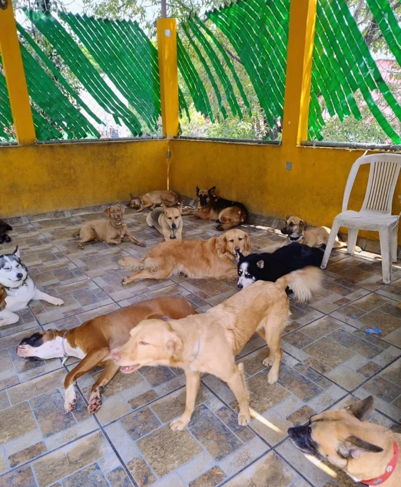
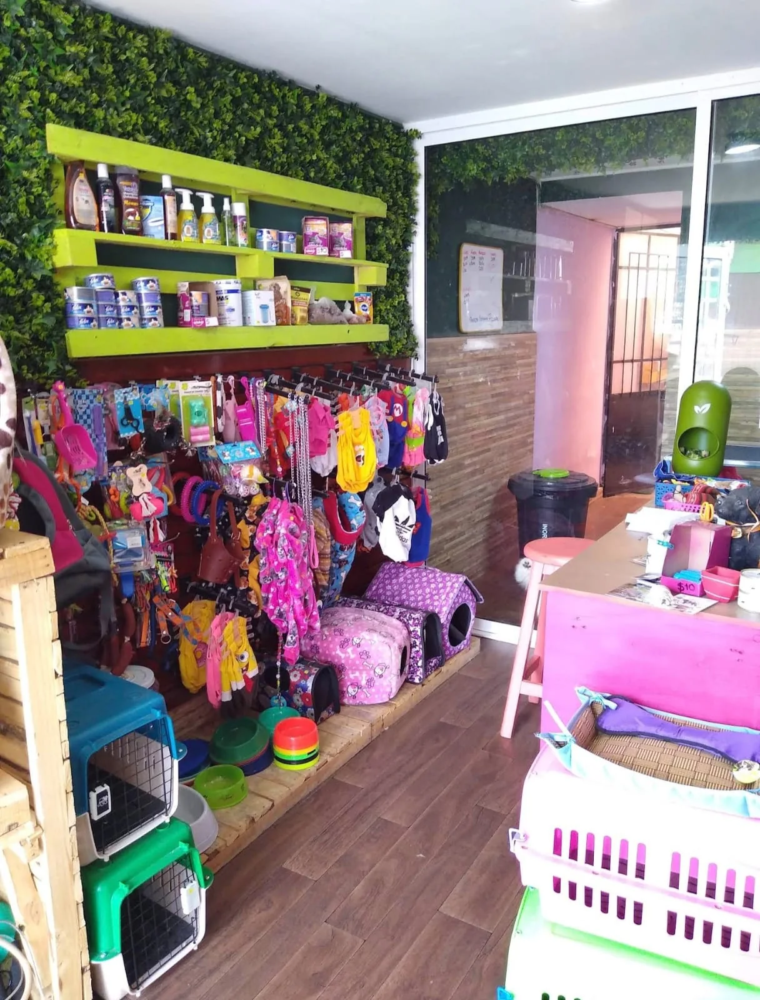
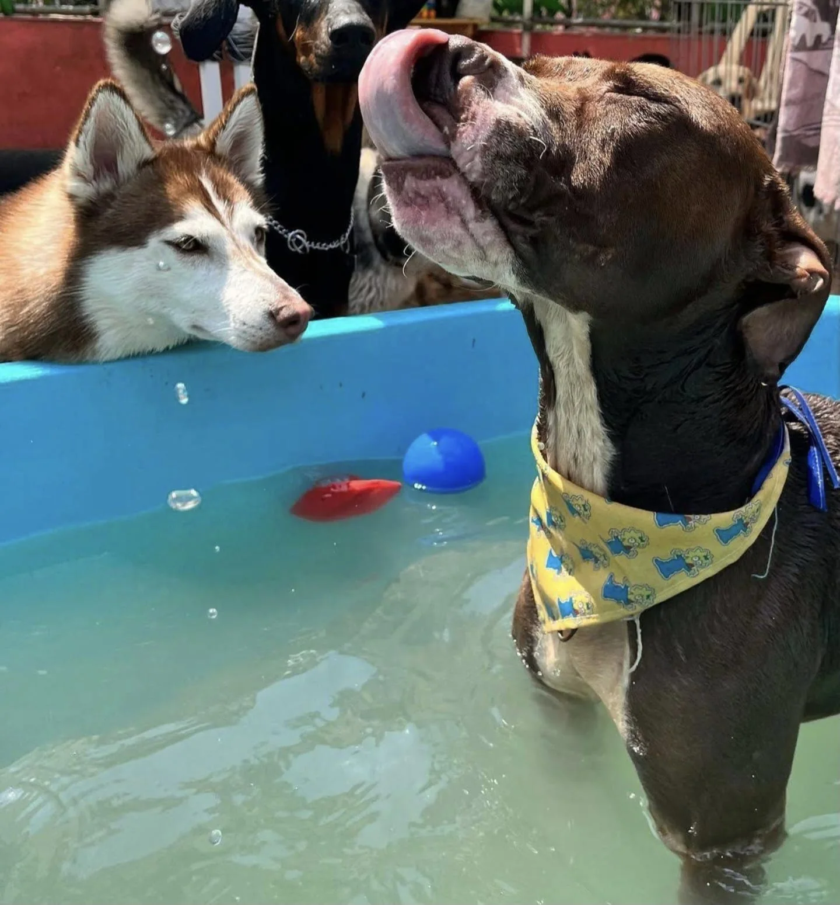

Una bienvenida tranquila
Platícanos su personalidad, sus horarios y lo que lo hace sentir cómodo para orientarte antes de reservar.
 forest dog spa
Contáctanos ↗
forest dog spa
Contáctanos ↗
Un espacio para convivir, jugar y dar paseos mientras tú sigues con tu rutina. Cada huésped tiene su propio ritmo: hay quien quiere explorar y quien prefiere tomarse una pausa.

Momentos de juego, convivencia y descanso en nuestros espacios.






La guardería es para quienes necesitan compañía y actividad durante el día. Cuéntanos cómo es tu perro y te ayudamos a revisar si este servicio se ajusta a su rutina.
Platícanos su personalidad, sus horarios y lo que lo hace sentir cómodo para orientarte antes de reservar.
Convivencia, juegos y paseos para que aproveche el día de acuerdo con su energía.
Al terminar, coordinamos contigo la salida y resolvemos cualquier duda para su próxima visita.
Consulta por WhatsApp la duración, disponibilidad y condiciones para la fecha que necesitas.
Confirmar tarifa ↗Confirma directamente si aplican condiciones adicionales para la fecha que necesitas.
Escríbenos para conocer disponibilidad, horarios y requisitos de ingreso antes de reservar.